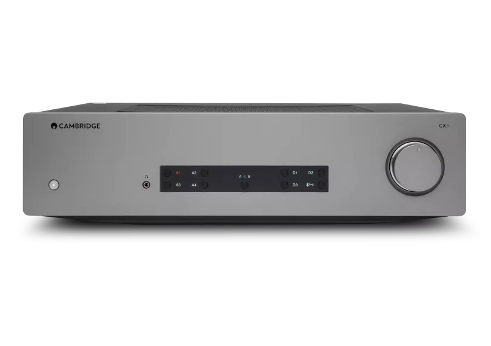
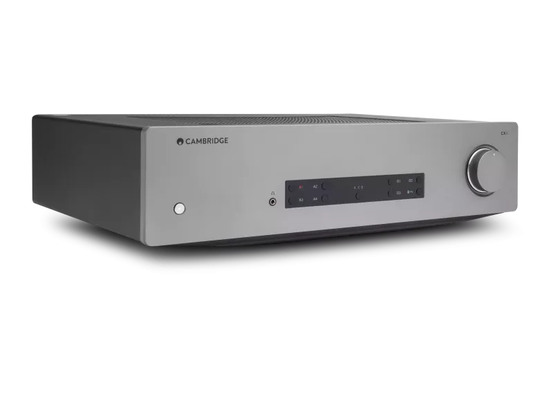
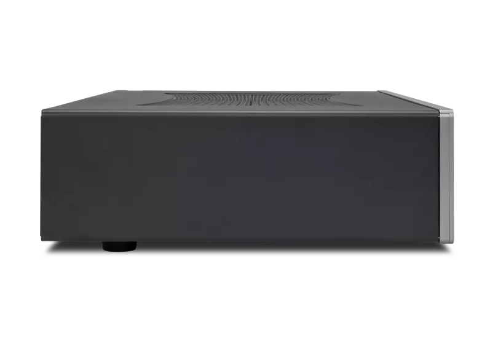
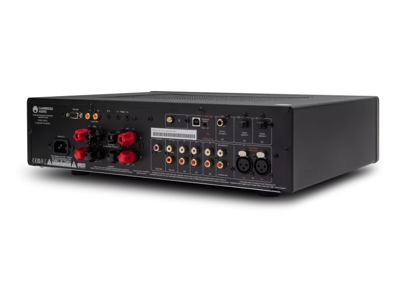
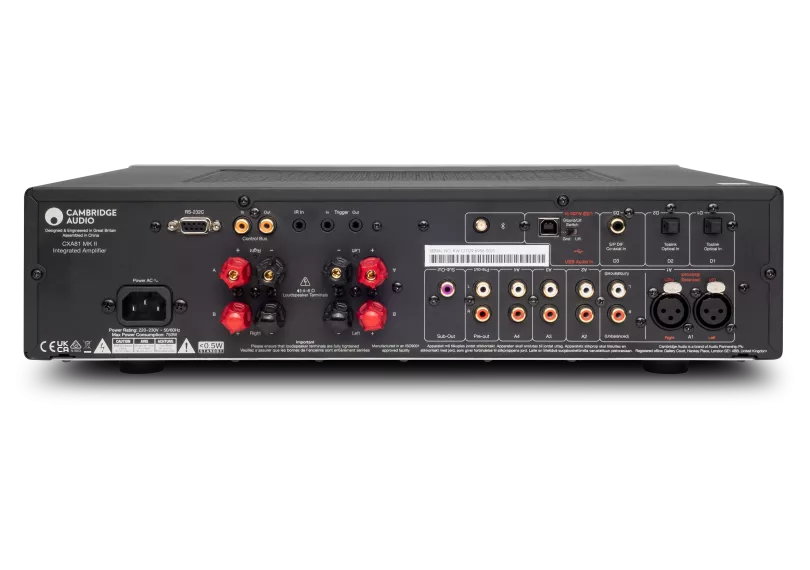
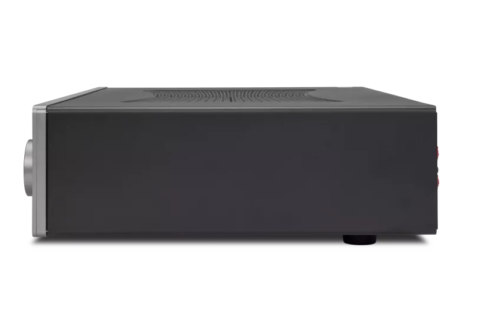
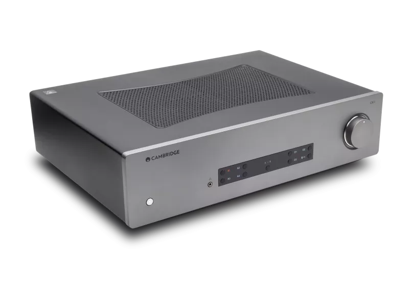
CXA81 Mk II
愛する音楽のように、私たちも常に前へ進み続けます。数々の受賞歴を誇るインテグレーテッドアンプを、新たなクラリティと深みのために再設計しました。80W/chの出力が音楽を完全にコントロールし、あらゆる感情とニュアンスを引き出します。
ルナグレー 販売店を探す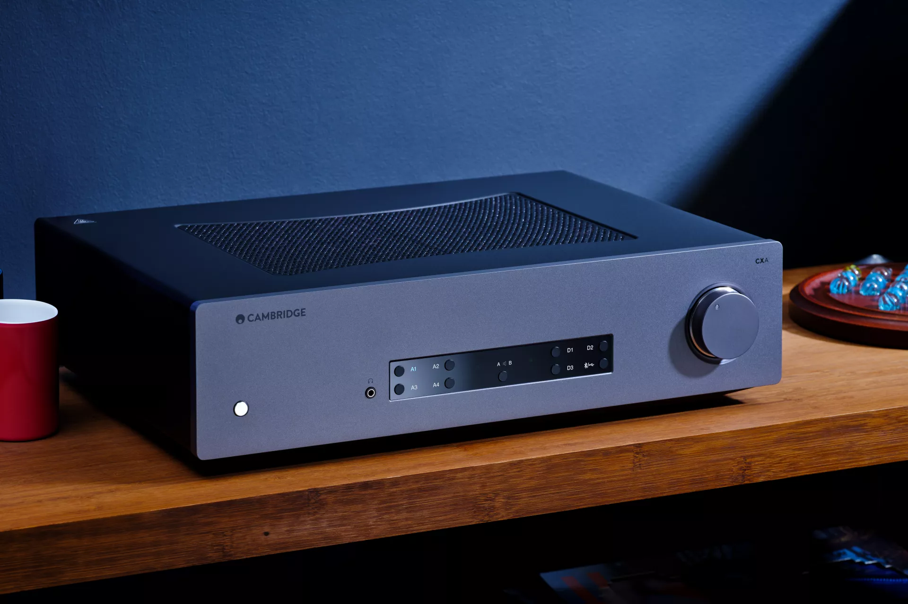
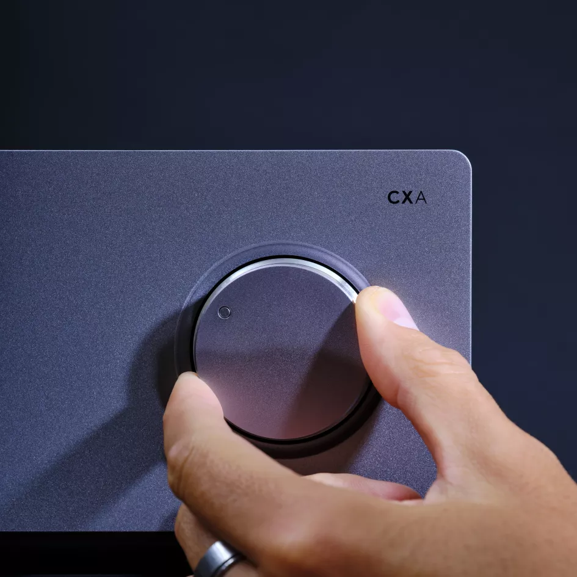
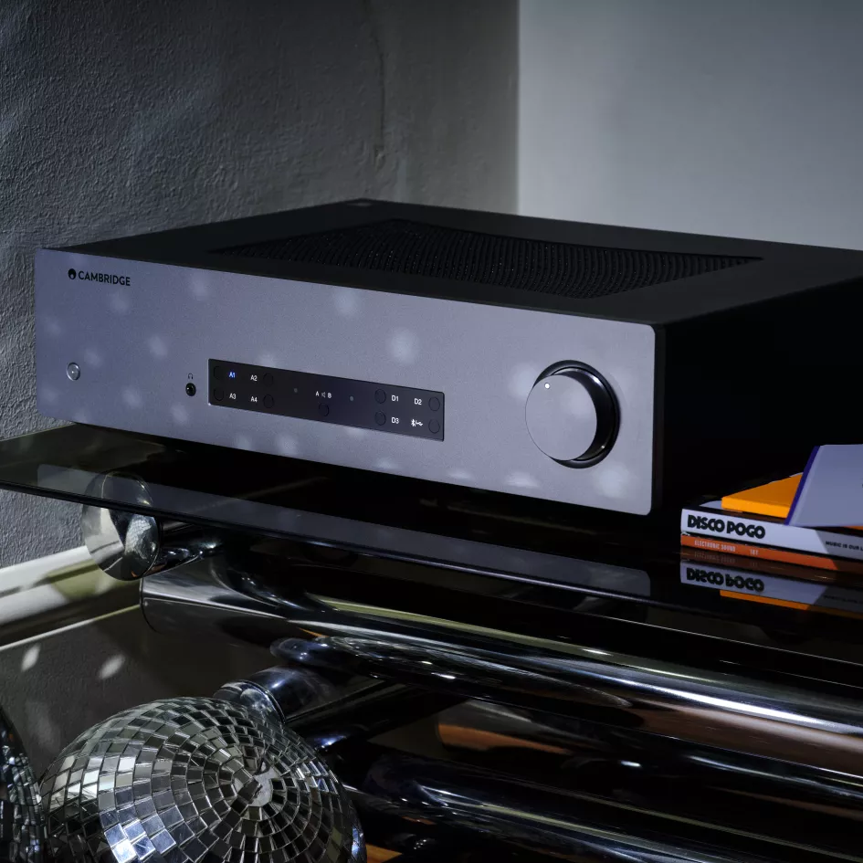
新たなディテールを発見する
かつてないほどの音楽的ディテールを体験してください。微妙なトーンの変化、ハーモニー、楽器の定位が鮮明になり、すべての楽器が生き生きと立ち現れる立体的なサウンドステージに没入できます。
スタンダードを引き上げる
卓越性を追求して再設計されたCXA81 Mk IIは、プレミアムコンポーネントとアップグレードされたDACを搭載。期待を超えるオーディオパフォーマンスで、新たな次元のクラリティと深みを実現します。
シームレスに統合
Bluetooth aptX HD、バランスXLR入力、Roon対応など、強化された接続性により、CXA81 Mk IIはあなたのシステムにシームレスに統合されます。2組目のスピーカーを接続すれば、別の部屋でも音楽を楽しめます。
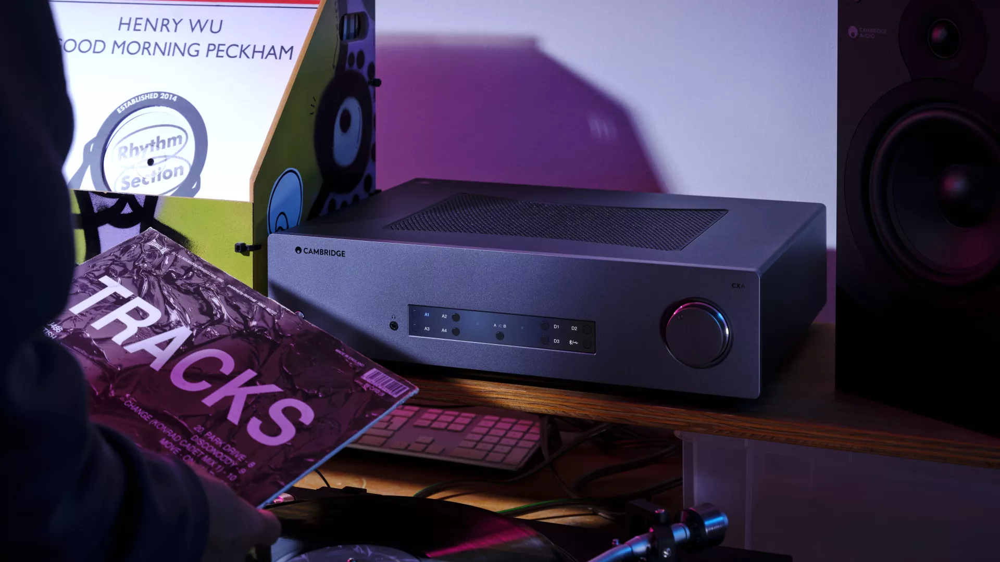
MINIMAL DESIGN, MAXIMAL PERFORMANCE
無駄を排しパフォーマンスに集中したCXA81 Mk II。クリーンなアルミニウムフェイシアには、電源、入力セレクター、そして滑らかなボリュームコントロールという、必要なものだけが配されています。
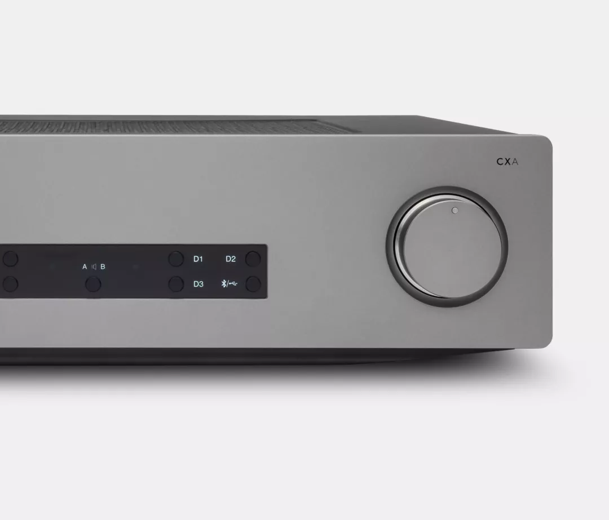
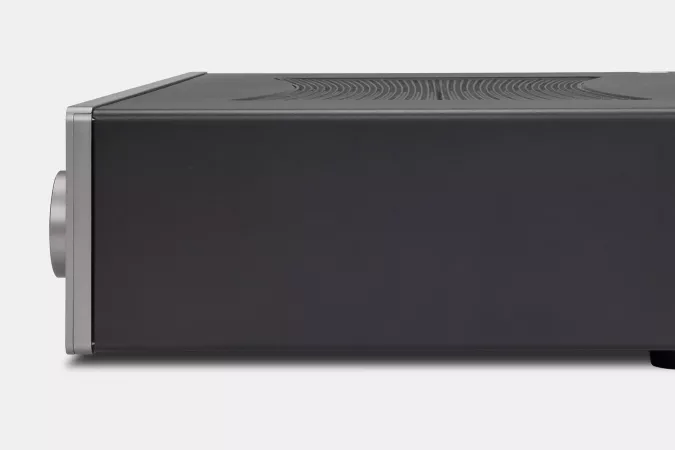
進化したパワー、洗練されたサウンド
自然な音楽性
カスタムClass ABアンプが、Class Aの温かみとClass Bの効率性を融合し、洗練されたバランスの良い、引き込まれるサウンドを実現。超効率的なショートシグナルパスが色付けを抑え、すべての音符が音楽の感動へとつながります。
究極のアップグレード
ESS ES9018K2M DACがデジタル音源にエネルギーと精度をもたらし、最大32-bit/384kHz、DSD256の明瞭さで新たなディテールの層を引き出します。
パワーと精度
80W/chの出力で、CXA81 Mk IIは余裕のあるパワーとダイナミックレンジを実現。トロイダルトランスとデュアルタップが、鮮やかで没入感のあるサウンドステージを生み出し、強音も弱音も難なく表現します。
Roon対応
PCやMacとのUSB接続で、Roonとシームレスに連携。次世代の音楽体験をお楽しみいただけます。
長く愛されるデザイン
アルミニウムとスチールから生まれたエレガントでミニマルなライン。CXA81 Mk IIは、物理的にも美的にも長く使い続けられるよう作られています。
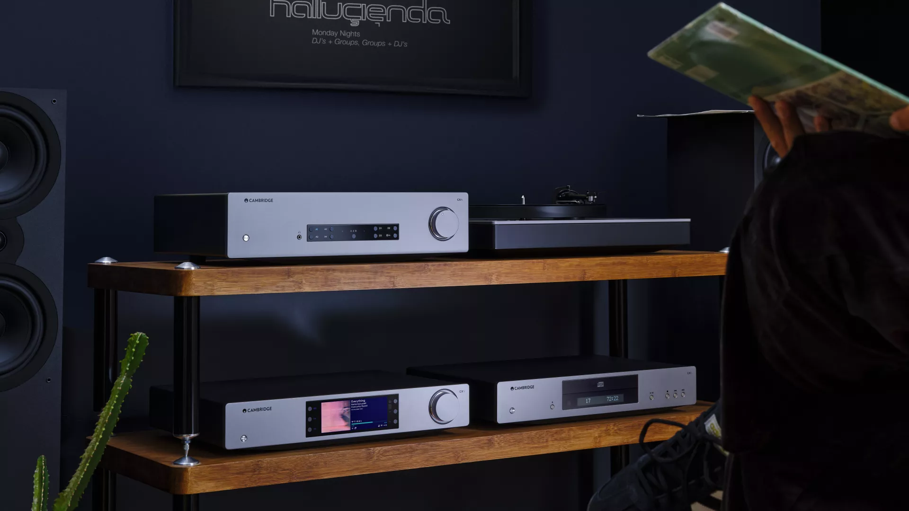
"A very refined performance"
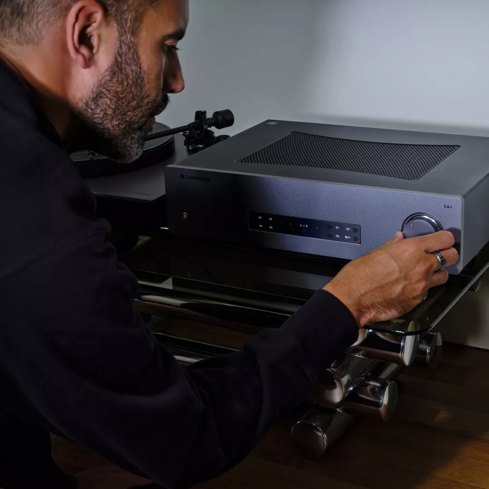
真の音楽性のために
ロンドンのエンジニアリングチームが、CXA81 Mk IIのあらゆる要素の試聴、チューニング、改良に膨大な時間を費やしました。究極のディテール、深み、音楽性を追求してすべてのコンポーネントを厳選。期待を超えるパフォーマンスをお届けします。